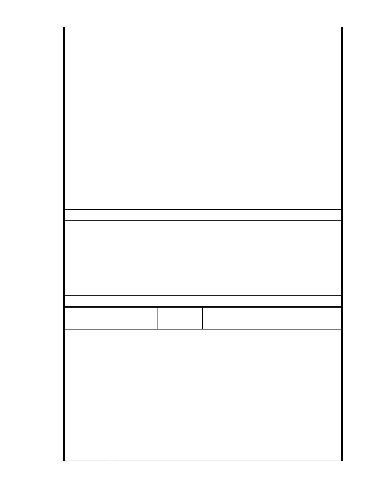

說明: 一個申請變更正當性受到質疑,從不公佈選址標準,前後任委員又對
當地環境敏感因素有所疑慮的案子,卻在主席主導下要強行主要計畫的通
過。沒 有 細 部 計 畫 ， 怎 麼 知 道 未 來 的 開 發 量 體 總 共 有 多 少 ？ 主席
只提到建議比照貓空案,請問貓空容積率多少?本案容積率多少？
慈濟內湖基地的三大訴求
1. 都市計畫委員會委員應暫緩審理本案，並促請市府全面進行保護區通
盤檢討，明確界定與宣布保護區的價值與功能，釐清並擬定保護區變
更的限制與原則，且將慈濟內湖基地納入通盤檢討。
2. 市府不應在選前任令利益團體挑戰保護區，並為其開門，而是應面對
問題並落實積極保護之承諾，研議與慈濟換地可能，並徹底解決當地
回填後淹水之患。
3. 都委會應公開三次討論會會議紀錄，並釐清本案為何暫停近三年後，
在新任都委會委員及選前再次啟動變更程序？過去三年間暫停的原
因為何？當時都委會委員所提的問題癥結解決了嗎？
建 議 辦 法 同上
一、本案申請範圍於慈濟購得前已遭非法填土，實不具保護區之功能，
今申請單位欲興辦社會福利事業，故依法辦理都市計畫變程序；目
前申請方案較先前方案已大幅降低開發強度、調整使用項目並承諾
市府說明
大面積滯洪設施等回饋事項，顯示申請單位欲改善現況之誠意。
二、相關陳情意見將納入本案審查人民意見，依法定程序辦理。
三、後續審理程序將要求申請人加強與在地區民、社會大眾，就基地現
況、規劃方案及環境助益作為等方面加強溝通。
委 員 會 決 議 同編號 1。
編 號 14
陳情人
中華民國荒野保護協會（99.11.5 於本會網
站傳送資料）
大官發言單
各位委員，開發單位大家好： 我叫官翰煒，房子買在成功路四段
尾五段頭十幾年，這是我的身分證（手上），我的戶籍地也是居住地，是
成公路四段 324 巷，離慈濟內湖兩大基地之一的南基地不到三百公尺。
前幾天，一聽說慈濟又要重提開發案，我馬上連著好幾天睡不著
陳情理由
覺，為什麼呢? 因為讓我想起了１９９７年 8 月 19 日的溫妮颱風,就在
我家隔壁社區的大湖山莊街 171 巷底，卓家一家三口淹死，2001 年納莉
颱風，同樣在內湖大湖山莊街，二十二歲的男子劉鎮榮及女友林小喬，
共同騎乘一台機車準備前往地勢較高處避難時，卻遭突然高漲的水勢反
衝回地下室，雙雙溺斃。
- 20 -